水・食料・ブランケット
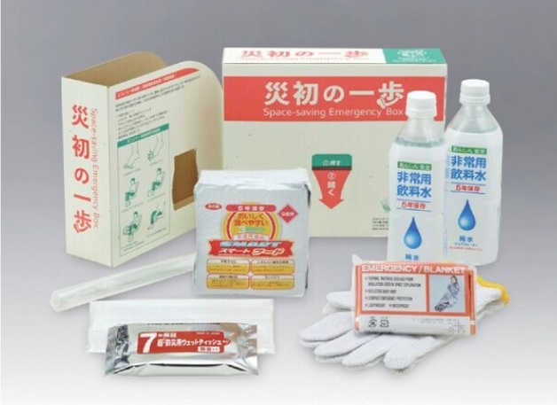
| ３日間防災セット「災初の一歩」 |
|
製品サイズ(㎜)：250*70*215 重さ：約2,200ｇ ケース入数：8セット 内容物：内容：①食品レーションバー×9本（1本400kcal）、非常用飲料水500ml×２本、スペースブランケット×１枚、ウェットティッシュ10枚、軍手×１双、マスク×１枚、チャック袋×1個 |
| 詳しく見る |
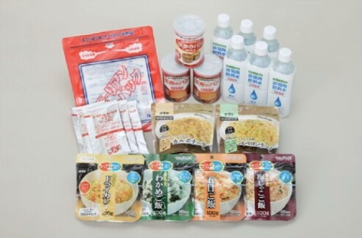
| 5年保存3日間食品セット |
|
製品サイズ(㎜)：320*210*220 重さ：約5,000ｇ ケース入数：3セット 内容物：①非常用食料（パンの缶詰３缶、カルボナーラ、ペペロンチーノ、梅じゃこ、ドライカレー、わかめご飯、五目ご飯 各１袋（スプーン付）、②非常用飲料水500㎖ ６本、③加熱セット ６個 |
| 詳しく見る |
長期保存食品
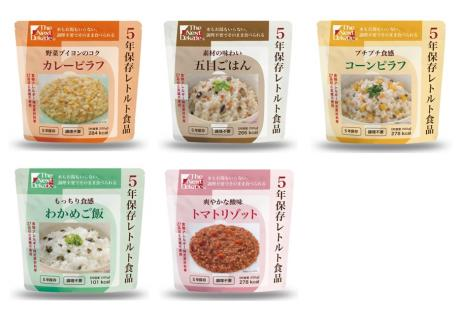
| ５年保存レトルト食品 アレルギー対応 |
|
製品サイズ(㎜)：160*160 重さ：200ｇ ケース入数：50個 包材形状：スタンドパウチ 賞味期限：製造より6年 |
| 詳しく見る |
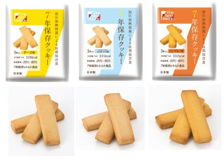
| 7年保存クッキー |
|
製品サイズ(㎜)：130*170*15 重さ：70ｇ ケース入数：100袋（内箱50袋×2） 内容物：①非常用食料（クッキー） 3本 賞味期限：製造より７年半 |
| 詳しく見る |
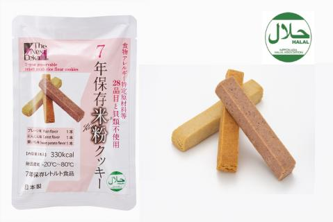
| 7年保存米粉クッキー ハラール認証 |
|
製品サイズ(㎜)：110*170 重さ：61.5ｇ ケース入数：100袋（内箱50袋×2） 内容物：①非常用食料（クッキー） 3本 賞味期限：製造より７年半 |
| 詳しく見る |
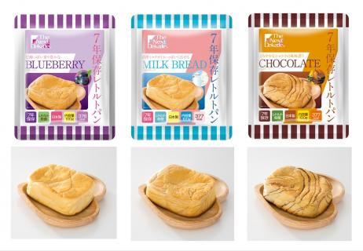
| 7年保存レトルトパン |
|
製品サイズ(㎜)：140*180*50 重さ：100ｇ ケース入数：50個 包材形状：スタンドパウチ 賞味期限：製造より７年半 |
| 詳しく見る |
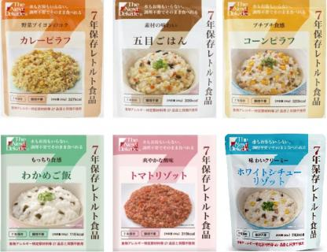
| 7年保存レトルト食品 アレルギー対応 |
|
製品サイズ(㎜)：160*190 重さ：230ｇ ケース入数：50個 包材形状：スタンドパウチ 賞味期限：製造より７年半 |
| 詳しく見る |

| 10年保存クッキー |
|
製品サイズ(㎜)：130*170*15 重さ：90ｇ ケース入数：100袋（内箱25袋×4） 内容物：①非常用食料（クッキー） 3本 賞味期限：製造より10年半 |
| 詳しく見る |
長期保存水
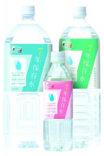
| 7年保存水 |
|
内容：500㎖／1,500㎖／2,000㎖ 製品サイズ(㎜)：詳細をご覧下さい。 重さ：詳細をご覧下さい。 ケース入数：詳細をご覧下さい。 賞味期限：製造より7年半 |
| 詳しく見る |
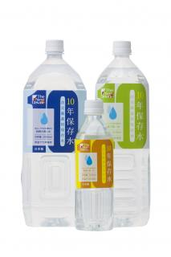
| 10年保存水 |
|
内容：500㎖／1,500㎖／2,000㎖ 製品サイズ(㎜)：詳細をご覧下さい。 重さ：詳細をご覧下さい。 ケース入数：詳細をご覧下さい。 賞味期限：製造より10年半 |
| 詳しく見る |
水・食料セット
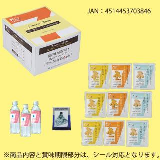
| 7年保存クッキー3日分セット |
|
製品サイズ(㎜)、重さ、ケース入数は詳細をご覧下さい。 Ｓ1 ７年保存クッキー×9袋 Ｓ2 7年保存クッキー×9袋、7年保存水×3本 Ｓ3 7年保存クッキー×3袋、７年保存レトルト食品×６袋 7年保存水×3本、アルミブランケット×1個 【お知らせ】S４は2021年8月末をもって販売を終了とさせていただきます。 |
| 詳しく見る |
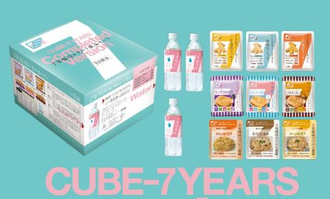
| 7年保存3日分セット Complete |
|
内容：7年保存クッキー×3個、7年保存レトルトパン×3個、7年保存レトルト食品×3個、7年保存水500㎖×3本 大きさ：233*205*170㎜ 重さ：約3.2㎏ ケース寸法：490*435*215㎜ ケース入数：4セット ケース重量：約14㎏ 賞味期限：製造より７年半 |
| 詳しく見る |
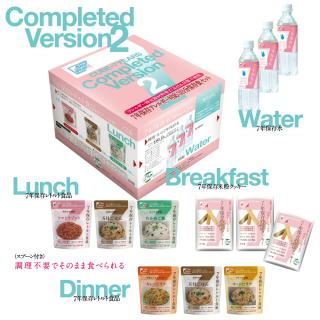
|
7年保存3日分セット アレルギー対応 Complete Version2 ハラール認証 |
|
内容：7年保存米粉クッキー×3個、 7年保存レトルト食品×6個 7年保存水500㎖×3本 大きさ：233*205*170㎜ 重さ：約3.5㎏ ケース寸法：490*435*195㎜ ケース入数：4セット ケース重量：約15.2㎏ 賞味期限：製造より７年半 |
| 詳しく見る |

| 10年保存クッキー3日分セット |
|
製品サイズ(㎜)、重さ、ケース入数は詳細をご覧下さい。 D1 10年保存クッキー×9袋 D2 10年保存クッキー×9袋、10年保存水×3本 D3 10年保存クッキー×9袋、10年保存水×3本、 アルミブランケット×1個 【お知らせ】D４は2021年8月末をもって販売を終了とさせていただきます。 |

| 7年保存車載備蓄セット Driver's Guardian |
|
内容：【1人分】 ・7年保存水500㎖×4本、長期保存ウェットティッシュ×1個、アルミシート×1個、ハンディトイレ男女兼用大・小便用×2個、軍手（滑り止め付）×1双、防災ポケットティッシュ ×2個、クーラーボックス×1個 【1人分】７Years-S1B 【2人分】７Years-S2B |
| 詳しく見る |